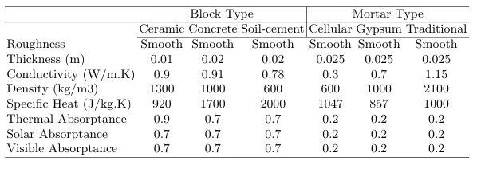
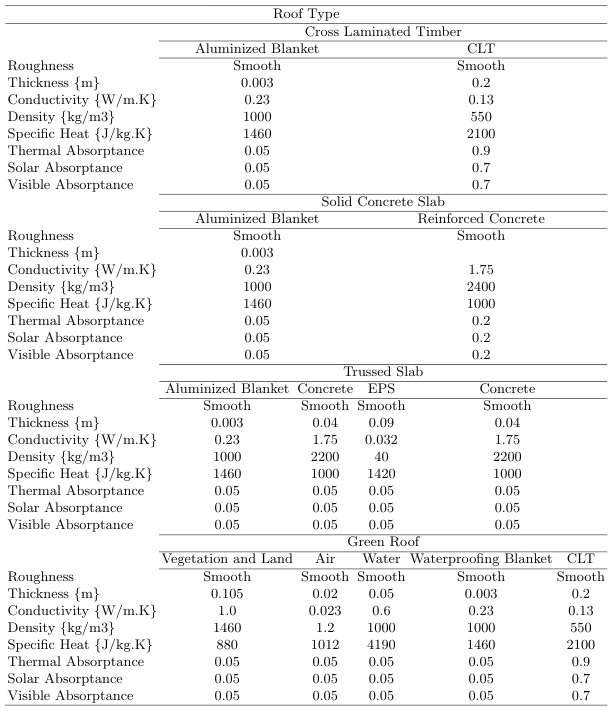

Tables with material properties used in the paper Thermal performance analysis of net-zero energy building via evolution algorithm for scenario simulation in EnergyPlus software.
Encontro Nacional de Modelagem Computacional e X ECTM – Encontro de Ciências e Tecnologia de Materiais
Juiz de Fora, MG – 08 a 11 Outubro 2019
Authors: Gisele Goulart Tavares - giselegoulart@ice.ufjf.br, Marcus Vinícius Ferraz - marcus.ferraz@engenharia.ufjf.br, Eric Vargas - eric.vargas@engenharia.ufjf.br, Victor de Castro Nobre - vitorcnobre@yahoo.com.br, Leonardo Goliatt - leonardo.goliatt@ufjf.edu.br, Priscila Capriles - priscila.capriles@ufjf.edu.br
Properties of blocks and mortars used during simulations.

Properties of materials used to compose roof types during simulations.
